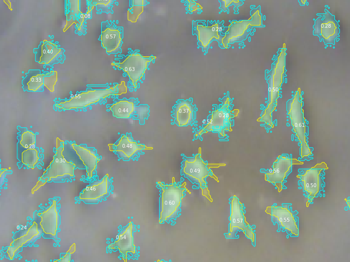

Projects

Semi-supervised vessel segmentation (Fetoscopy)
I was working on a semi-supervised vessel segmentation project at WEISS/University College London in the summer of 2021.
Started: July 2021

Started: July 2019
Cytotoxicity grading and cell segmentation (Fibroblast)
Instance segmentation with a Mask R-CNN with computer vision generated masks for cells.
Started: July 2019